景点 & 餐厅总览
按亲子友好度排序；带图的点开可切换同景点全部实拍。
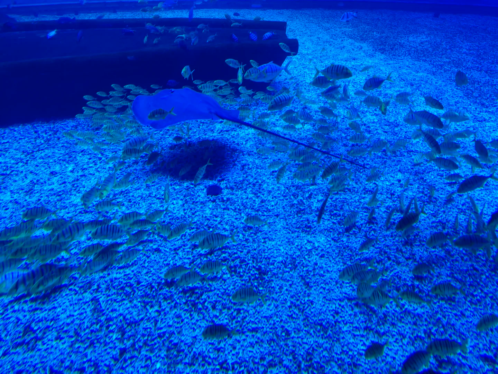
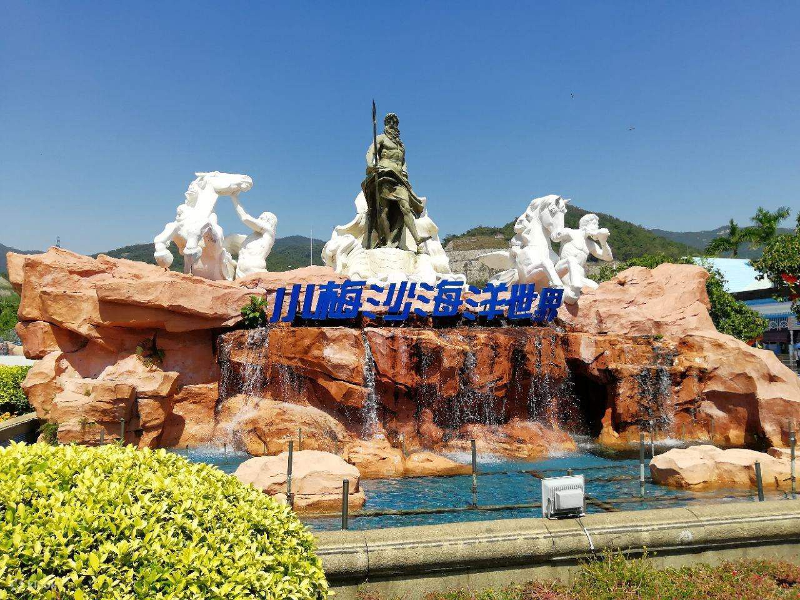


🐬 小梅沙海洋世界
核心 · 盐田您最想去的景点！入口处巨大白色海神雕塑群极具视觉冲击。园内有海豚表演、海底隧道、极地动物馆（企鹅、北极熊）、水母宫、互动触摸池。前身为 1999 年开园的「小梅沙海洋世界」，2024 年全面焕新升级，是国内最早一批海洋主题公园之一。4 口之家必玩。
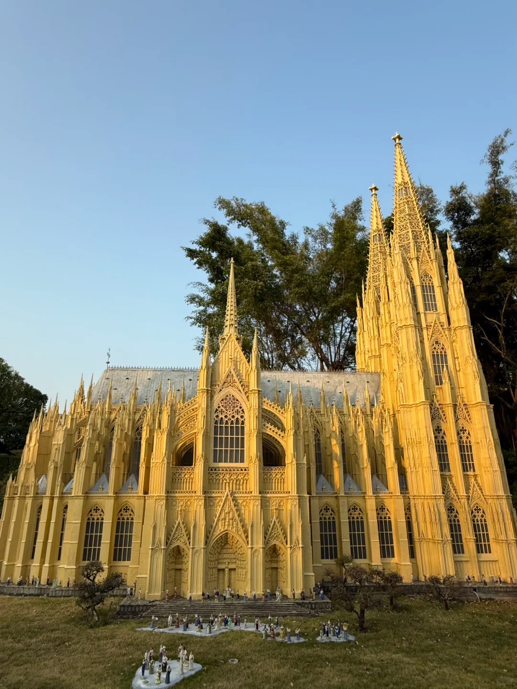


🌍 深圳世界之窗
南山小孩想去的地方！大型微缩景观主题公园，展示全球 130 余处著名景点——埃菲尔铁塔、金字塔、科隆大教堂、万里长城、自由女神像。一天带小孩环游世界，动感游乐区有旋转木马、小火车等亲子项目。1994 年开园，国内最早微缩景观公园之一。
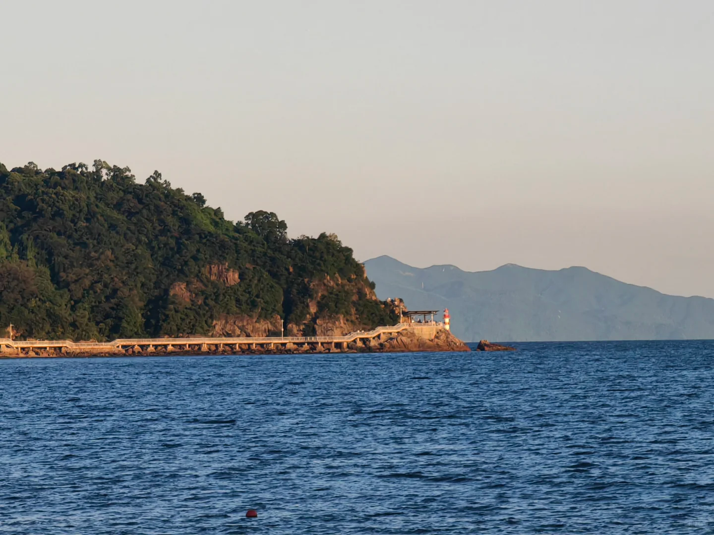
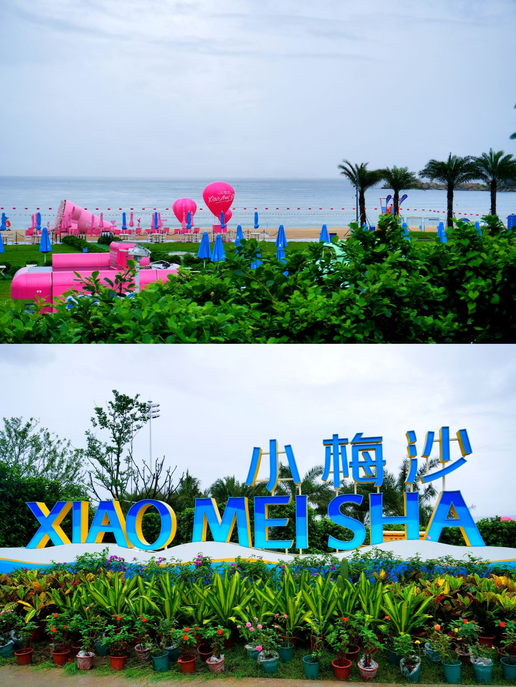
/image copy 2.png)
🏖️ 小梅沙海滨乐园
紧邻海洋世界和海洋世界是一体的！沙滩入口有彩色「XIAOMEISHA」立体字母标识。沙质细腻洁白，海水清澈，配蓝色遮阳伞与休闲躺椅。凭海洋世界门票免费进入，不用额外花钱。傍晚踏浪不晒，亲子友好。
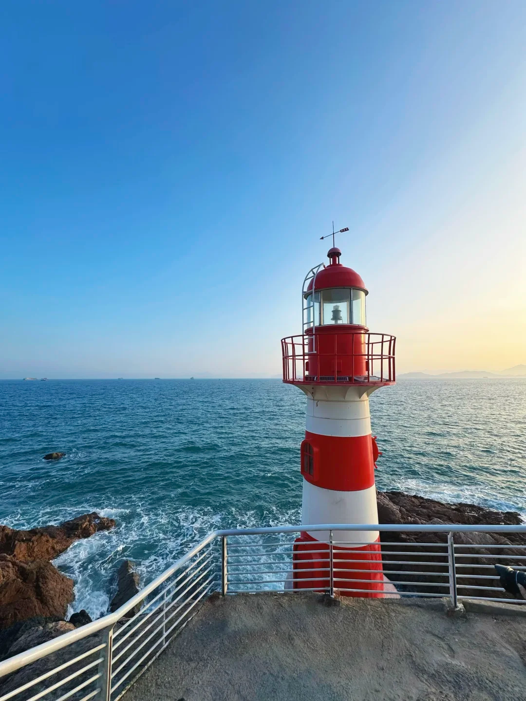


🗼 背仔角灯塔
距小梅沙 1.5km盐田海滨栈道东端尽头的网红灯塔，红白相间塔身矗立海边礁石上，白色栈道可达。建于 20 世纪初，曾是深圳东部重要航海导航标志。日落时分金色阳光洒在碧蓝海面，与灯塔交相辉映，是深圳最出片的海景打卡点。完全免费。
🌊 大梅沙海滨公园
距小梅沙 3km深圳最著名的免费海滩，大小梅沙可以一起玩！沙滩面积更大，设专门游泳区与儿童戏水区，还有摩托艇、帆板等水上项目。周边商业配套成熟（奥特莱斯），餐饮购物便利。海滩始建于 1999 年，承载几代深圳人的海滨记忆。周末需提前在「i深圳」APP 预约。
🌿 盐田海滨栈道
贯穿全长 19.5 公里海边步道，白色护栏沿海岸线延伸，串联大梅沙、小梅沙、背仔角灯塔。其中大梅沙–背仔角段风景最佳，夜晚灯光璀璨。栈道始建于 2008 年，是深圳「东部滨海旅游岸线」重要组成部分，曾获国际景观设计奖项。带小孩走短段即可，量力而行。
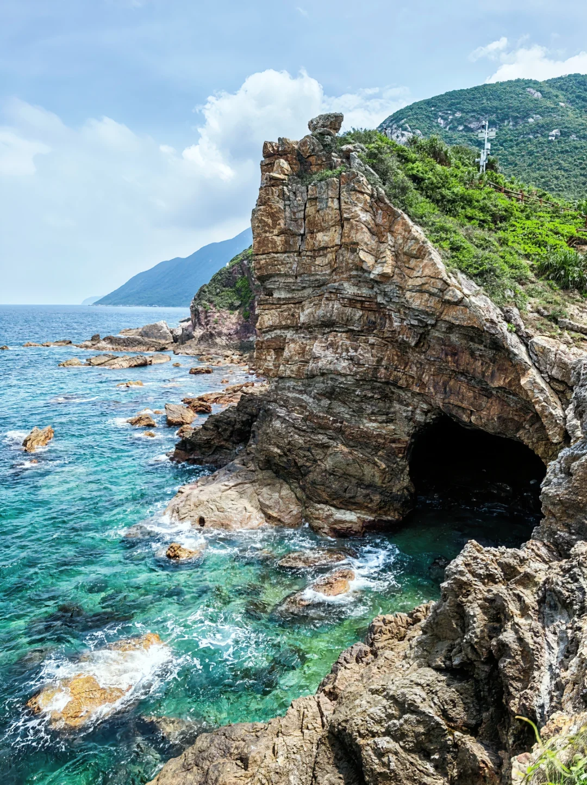


🧜 人鱼洞（鹿嘴山庄）
大鹏半岛周星驰《美人鱼》取景地！位于杨梅坑鹿嘴山庄，海蚀崖下人鱼洞是电影中人鱼族家园。悬崖、碧海、蓝天，海水呈翡翠绿到宝石蓝渐变。可乘观光车或快艇到达，小孩会非常兴奋。深圳最出片的海岸之一。
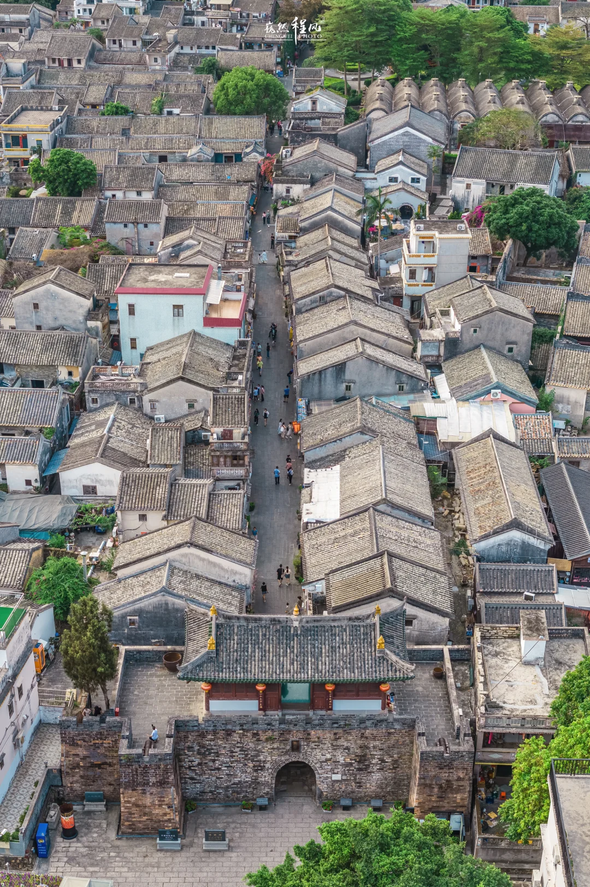
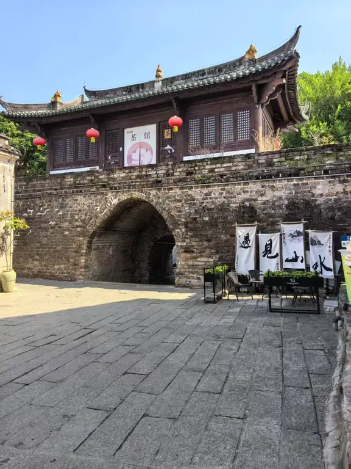

🏛️ 大鹏所城
大鹏半岛深圳历史之根！始建于明洪武二十七年（1394 年），明清两代中国南部海防军事要塞，深圳别称「鹏城」即源于此。古城内保存完好城门、城墙、将军府第与古民居，带孩子了解深圳 600 年历史文化的最佳课堂。完全免费，国家级重点文物保护单位。
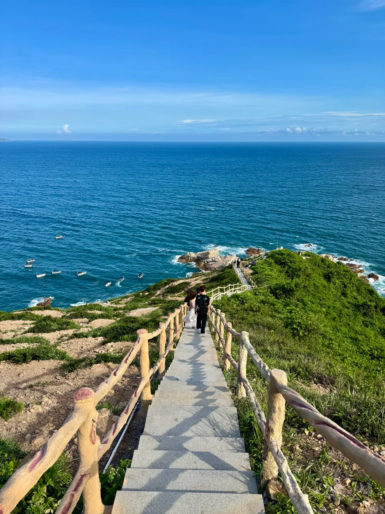
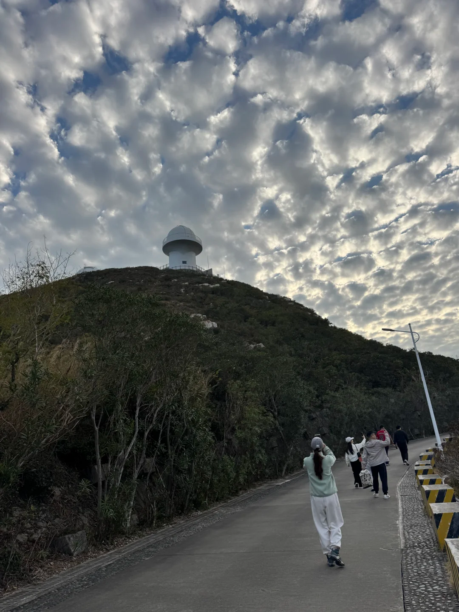

🔭 深圳天文台
大鹏半岛位于西涌海岸，拥有深圳最美的海边栈道。蜿蜒栈道沿悬崖向海延伸，被《国家地理》评为中国最美海岸线之一。360° 无敌海景，海天一色。需提前在公众号预约，或仅走公共栈道（无需预约）。
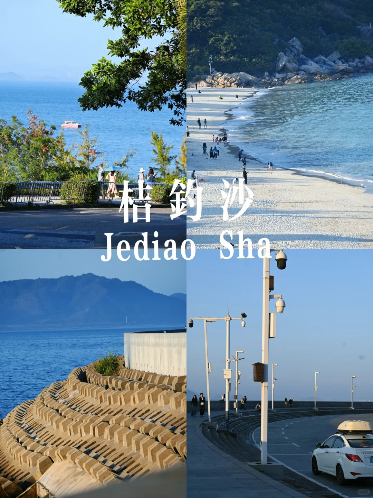
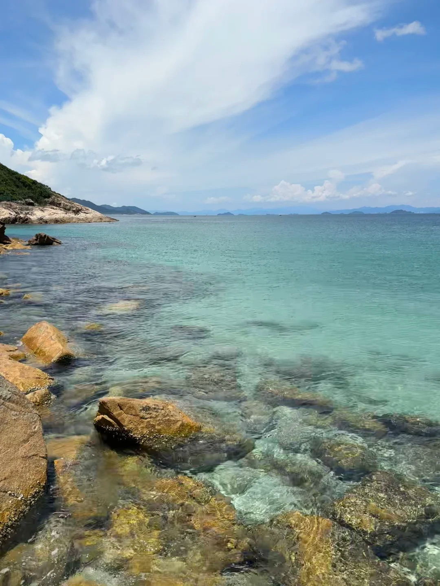

🏖️ 桔钓沙
大鹏半岛深圳最美沙滩之一，深圳版「马尔代夫」！沙质洁白细腻如面粉，海水清澈见底，呈迷人玻璃海质感。人比大小梅沙少很多，适合带小孩安静玩水。大鹏半岛东北部天然海湾，三面青山环抱，水质极佳。
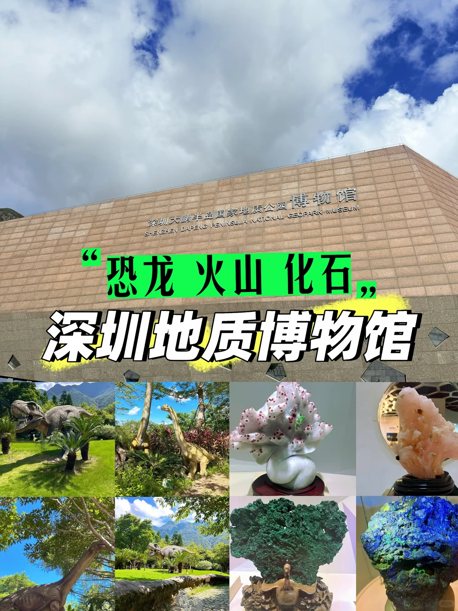


🌋 大鹏半岛国家地质公园博物馆
大鹏半岛展示大鹏半岛独特火山地质遗迹与海岸地貌。1.45 亿年前古火山活动留下奇特火山岩、海蚀洞与奇石景观。馆内有恐龙化石、火山模型、珍稀矿石展示，是带小孩学习地球科学的绝佳场所。完全免费。